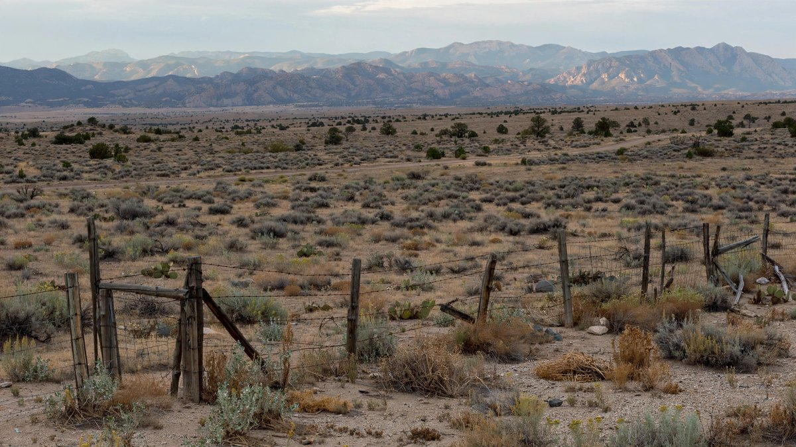

न्यु मेक्सिकोले बेचबिखनमा एपस्टाइनका वकिल र लेखापालमाथि मुद्दा हाल्यो
महान्यायाधिवक्ता राउल टोरेजले ड्यारेन इन्डाइक र रिचर्ड काह्नविरुद्ध दीवानी मुद्दा दायर गरे। उनले दुवैले एपस्टाइनको बेचबिखनलाई पैसा दिन र लुकाउन मद्दत गरेको बताए र अदालतसँग सम्पत्तिबाट १० करोड डलरभन्दा बढी भुक्तानी रोक्न माग गरे।

मुख्य बुँदाहरू
- न्यु मेक्सिकोले बुधबार जेफ्री एपस्टाइनका लामो समयका वकिल र लेखापालमाथि मुद्दा हाल्यो र अदालतसँग दिवंगत यौन अपराधीको सम्पत्तिबाट भुक्तानी रोक्न तथा कथित दुर्व्यवहारका पीडितहरूका लागि क्षतिपूर्ति…
- न्यु मेक्सिकोको संघीय अदालतमा दायर गरिएको दीवानी मुद्दामा इन्डाइक र काह्नले सान्ता फेबाट ३० माइल दक्षिणमा रहेको उनको सम्पत्ति जोरो र्यान्चमा भएको दुर्व्यवहारसहित एपस्टाइनको यौन बेचबिखन कार्यलाई…
- "जेफ्री एपस्टाइन एक्लैले काम गरेका थिएनन्, र उनको मृत्युले उनका अपराध सम्भव बनाउन मद्दत गर्नेहरूको जवाफदेहिताको खोजी अन्त्य गर्दैन," टोरेजले अल्बुकर्कमा आयोजित पत्रकार सम्मेलनमा भने। एपस्टाइनको…
न्यु मेक्सिकोले बुधबार जेफ्री एपस्टाइनका लामो समयका वकिल र लेखापालमाथि मुद्दा हाल्यो र अदालतसँग दिवंगत यौन अपराधीको सम्पत्तिबाट भुक्तानी रोक्न तथा कथित दुर्व्यवहारका पीडितहरूका लागि क्षतिपूर्ति दिलाउन माग गर्यो। महान्यायाधिवक्ता राउल टोरेजले वकिल ड्यारेन इन्डाइक र लेखापाल रिचर्ड काह्नविरुद्ध कानुन कार्यान्वयन निकायको यो पहिलो कारबाही भएको बताए।
न्यु मेक्सिकोको संघीय अदालतमा दायर गरिएको दीवानी मुद्दामा इन्डाइक र काह्नले सान्ता फेबाट ३० माइल दक्षिणमा रहेको उनको सम्पत्ति जोरो र्यान्चमा भएको दुर्व्यवहारसहित एपस्टाइनको यौन बेचबिखन कार्यलाई सहज बनाएको, पैसा दिएको र लुकाएको आरोप छ। मुद्दामा एपस्टाइनको सम्पत्तिलाई नाम दिइएको छ र म्यानहट्टन जेलको कोठामा उनको मृत्यु हुनु केही दिनअघि बनाइएको निजी ट्रस्टले आफूसँग भएको १० करोड डलरभन्दा बढी रकम खर्च गर्न नपाओस् भन्ने लक्ष्य छ, रोयटर्सले जनाएको छ। सम्पत्तिको मूल्य १० करोड ७० लाख डलरभन्दा बढी छ र मुद्दाअनुसार इन्डाइक र काह्नले क्रमशः ५ करोड र २ करोड ५० लाख डलरको बकस पाउने लाइनमा छन्।
"जेफ्री एपस्टाइन एक्लैले काम गरेका थिएनन्, र उनको मृत्युले उनका अपराध सम्भव बनाउन मद्दत गर्नेहरूको जवाफदेहिताको खोजी अन्त्य गर्दैन," टोरेजले अल्बुकर्कमा आयोजित पत्रकार सम्मेलनमा भने। एपस्टाइनको कथित दुर्व्यवहारका दुई पीडित जुलिया मोल्चानोभा र अनुश्का डी जर्जियो उनको साथमा उभिएका थिए।
उजुरीमा के आरोप छन्
४९ पृष्ठको उजुरीले दुवै सल्लाहकारले कर्पोरेट संस्थाहरू सञ्चालन गरेको, लेनदेन स्वीकृत गरेको र केटी तथा युवतीहरूको भर्ती र नियन्त्रणमा सघाउने नगद दिएको बताउँछ। उजुरीमा उल्लेख गरिएका वित्तीय अभिलेखले सन् २००२ देखि २०१३ बीच एपस्टाइन र उनका सहयोगीहरूले ६० लाख डलरभन्दा बढी नगद निकालेको देखाउँछन्। इन्डाइकले सन् २०१३ देखि २०१७ बीच एउटै बैंकबाट हरेक वर्ष २ लाख डलरभन्दा बढी निकालेको आरोप छ, एपस्टाइनले फ्लोरिडामा यौन अपराध स्वीकार गरेर यौन अपराधीका रूपमा दर्ता भएको वर्षौं पछिको कुरा हो यो। उजुरीमा इन्डाइकले सरकारी रिपोर्टिङ नियम सक्रिय नगरी एपस्टाइनका खाताबाट पैसा कसरी निकाल्ने भनेर बैंक कर्मचारीलाई सोधेको र पीडितहरूलाई चुप लगाउन भुक्तानीको व्यवस्था गरेको आरोप पनि छ।
राज्यले संघीय ट्राफिकिङ भिक्टिम्स प्रोटेक्सन ऐन र न्यु मेक्सिकोको र्याकेटियरिङ ऐनअन्तर्गत दाबी गरेको छ। टोरेजको कार्यालयले फेब्रुअरीमा र्यान्चका गतिविधिबारेको अनुसन्धान पुनः खोलेको थियो। एपस्टाइनबारे विधायिकी सत्य आयोग बनाउने न्यु मेक्सिको अमेरिकाको एक मात्र राज्य हो, र यसले नकाटिएका फाइलहरूमा पहुँचका लागि अमेरिकी न्याय विभागमाथि छुट्टै मुद्दा पनि हालेको छ।
जवाफ
इन्डाइक र काह्नले आरोप अस्वीकार गरेका छन्। उनका वकिल ड्यानियल वाइनरले CNBC लाई दाबीहरू "पूर्ण रूपमा झुटा" भएको बताए र दुवै जनाले अदालतमा जित्ने विश्वास व्यक्त गरे। उनले पहिले उनीहरूसँग जानकारी नै नमागी मुद्दा हालेको भन्दै महान्यायाधिवक्ताको कार्यालयको आलोचना गरे, र कुनै पनि महिलाले दुवैमध्ये कसैलाई यौन दुर्व्यवहार गरेको वा देखेको आरोप नलगाएको बताए।
किन यो महत्त्वपूर्ण छ र अब के हुन्छ
यो मुद्दाले केन्द्रीय व्यक्तिको मृत्यु भएको वर्षौं पछि राज्यले बेचबिखन सञ्जालका पेशेवर सल्लाहकारहरूलाई जिम्मेवार ठहर्याउन सक्छ कि सक्दैन, र सम्पत्तिमा बाँकी पैसा उनको वित्त हेर्नेहरूलाई दिनुअघि पीडितसम्म पुर्याउन सकिन्छ कि सकिँदैन भन्ने परीक्षण गर्नेछ। वाल स्ट्रिट जर्नलका अनुसार न्युयोर्कको सदर्न डिस्ट्रिक्टस्थित अमेरिकी महान्यायाधिवक्ता कार्यालयले पनि दुवै जनामाथि अनुसन्धान खोलेको छ। कुनै अदालतले अहिलेसम्म दाबीहरूमा फैसला दिएको छैन र राज्यले मागेको रोक स्वीकृत भएको छैन।
स्रोतहरू
रोयटर्स, CNBC र एसोसिएटेड प्रेस, अक्टोबर २१, २०२६।
समयरेखा
- Feb 2026महान्यायाधिवक्ताका अनुसार न्यु मेक्सिकोले एपस्टाइनको जोरो र्यान्चका गतिविधिबारेको अनुसन्धान पुनः खोल्यो।
- Oct 21, 2026महान्यायाधिवक्ता राउल टोरेजले न्यु मेक्सिकोको संघीय अदालतमा ड्यारेन इन्डाइक र रिचर्ड काह्नविरुद्ध दीवानी मुद्दा दायर गरे।